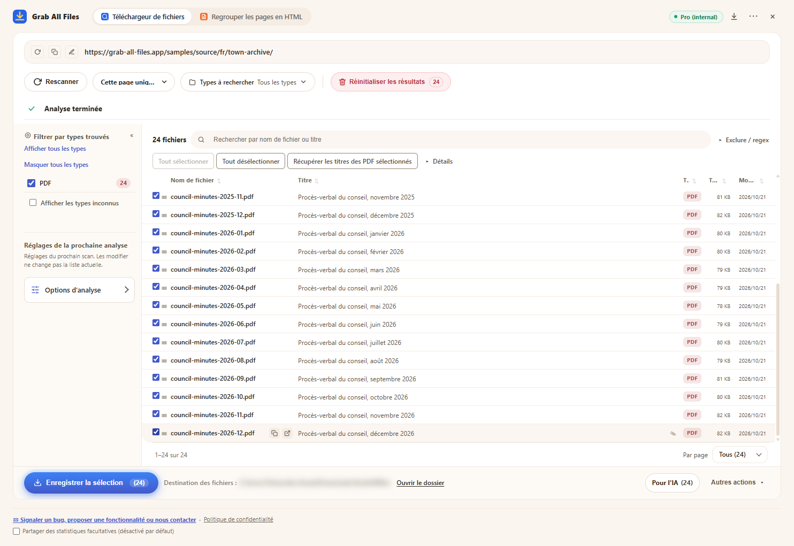

Résultats réels de Grab All Files
24 PDF téléchargés en une seule fois (Pro)
Les archives des procès-verbaux du conseil d’une ville fictive (un procès-verbal par mois, de janvier 2025 à décembre 2026 : 24 PDF) ont été analysées, tous les PDF ont été sélectionnés et enregistrés en une seule fois. La formule Gratuit enregistre jusqu’à 10 fichiers par téléchargement ; il aurait donc fallu trois exécutions. La formule Pro n’a pas de limite par téléchargement. Les noms de fichiers ont été donnés par l’extension à partir du titre de chaque PDF.
Fichiers produits
- Procès-verbal du conseil, janvier 2025.pdf
- Procès-verbal du conseil, février 2025.pdf
- Procès-verbal du conseil, mars 2025.pdf
- Procès-verbal du conseil, avril 2025.pdf
- Procès-verbal du conseil, mai 2025.pdf
- Procès-verbal du conseil, juin 2025.pdf
- Procès-verbal du conseil, juillet 2025.pdf
- Procès-verbal du conseil, août 2025.pdf
- Procès-verbal du conseil, septembre 2025.pdf
- Procès-verbal du conseil, octobre 2025.pdf
- Procès-verbal du conseil, novembre 2025.pdf
- Procès-verbal du conseil, décembre 2025.pdf
- Procès-verbal du conseil, janvier 2026.pdf
- Procès-verbal du conseil, février 2026.pdf
- Procès-verbal du conseil, mars 2026.pdf
- Procès-verbal du conseil, avril 2026.pdf
- Procès-verbal du conseil, mai 2026.pdf
- Procès-verbal du conseil, juin 2026.pdf
- Procès-verbal du conseil, juillet 2026.pdf
- Procès-verbal du conseil, août 2026.pdf
- Procès-verbal du conseil, septembre 2026.pdf
- Procès-verbal du conseil, octobre 2026.pdf
- Procès-verbal du conseil, novembre 2026.pdf
- Procès-verbal du conseil, décembre 2026.pdf
L’extension avec 24 PDF sélectionnés, juste avant l’enregistrement (l’emplacement d’enregistrement est flouté)

Comment il a été réalisé
- Page source
- /samples/source/fr/town-archive/
- Extension
- Grab All Files 5.8.31
- Navigateur
- Chrome 156.0.8078.48 (Windows 11)
- Formule
- Pro
- Réalisé le
- 2026-10-28
- Réglages
- Profondeur des liens : Cette page uniquement
- Type de fichier : PDF uniquement
- Fichiers sélectionnés : 24
- Enregistré dans : le dossier de téléchargement du navigateur (dossier GrabAllFiles)